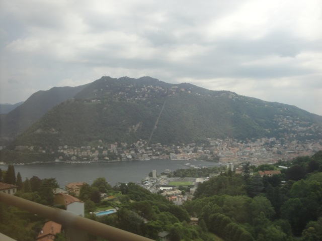
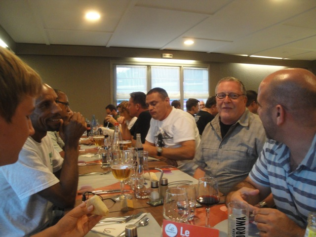
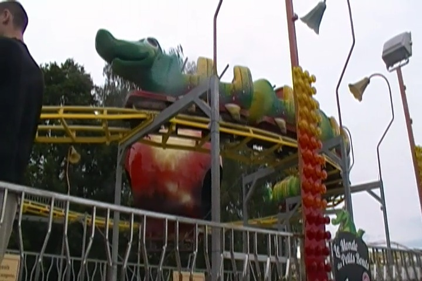
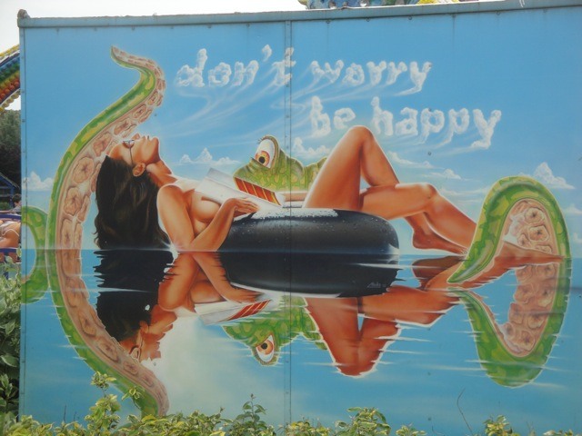

TPR's Mega Europe Trip
Rome Rome Credit Whoring Rainbow Magicland Fiabilandia Mirabilandia
Movieland Studios
Gardaland
Walygator Parc
Holiday Park
Europa Park Fort Fun Heide Park Schlossbeck Movie Park Germany Phantasialand
Parc Asterix Disneyland Paris

Well, the Italy portion of TPR's Mega Europe Trip has ended. Now I loved Italy and the Italy parks were all awesome. So its sad to leave. But hey. Look at the bright side. Now I get to check out all the awesome parks in Germany and France. But to say good bye to Italy, here's some photos of a beautiful Italian Town I drove by.
Yeah. I'd really like to live here.
 Ok. We are now in Switzerland. Now Switzerland isn't one of the official countries of the trip. Those would be Italy, Germany, and France. But we did drive through Switzerland. Now normally just because we drive through somewhere, that means jack-sh*t. But just being in Switzerland is amazing. Just driving through it is incredible and makes me happy. I mean look at that!!! I wanna go cliff jumping into that lake SO BAD!!!!!!!
Ok. We are now in Switzerland. Now Switzerland isn't one of the official countries of the trip. Those would be Italy, Germany, and France. But we did drive through Switzerland. Now normally just because we drive through somewhere, that means jack-sh*t. But just being in Switzerland is amazing. Just driving through it is incredible and makes me happy. I mean look at that!!! I wanna go cliff jumping into that lake SO BAD!!!!!!!
Bonus Stop at the Waterpark anyone? =)
No need for any movies or TV Shows to play on the bus. Just look out the window.
We decided to stop for lunch at this Rest Stop so we wouldn't starve and to just get out and enjoy Switzerland. Now for as much as I love Switzerland, theres one part I can't stand. HIGH PRICES!!!!! THIS COUNTRY IS SO FREAKING EXPENSIVE!!!!! A plate of spaghetti and a coke cost me €19!!!!!! That's the equivelant of $23.35!!!! These are prices that make Knotts Berry Farm look cheap!!!!
Hey, the rest stop may have robbed me, but look!!! Such a beautiful view of the Alps!!!!
Its so green over here.
Can't stop taking photos of Switzerland!!! So f*cking beautiful!!!!
Every photo I take looks like it should be on a post card.
Ok. The beautys all gone. We must be in France now. Ok, its not terrible. It sure as hell beats driving through any of the Midwest States, but come on. We were just in Switzerland.
We have arrived at our hotel. And hey, it looks like a nice quaint little place.

They served us a really nice dinner which I really enjoyed.
Yes. I really did mix Coke and Wine. And it actually tasted really good. Think of a sort of slightly bitter Coke that has a strong wine flavored aftertaste (Nice photo-bomb BTW Patrick).
Something tells me that that stray cat is carrying some sort of diseases.
In preperation for us riding what is claimed as one of the worst woodies in the world, Anaconda, Terrance says a prayer for us hoping that it won't murder us.
YAY!!!! WE'RE AT A PARK!!! It's been over 24 hours, I'm starting to have withdrawls. =)
Big shock. The Space Shot and the Topple Tower are both closed.
Hey, you may hate us now for locking you in the phone booth, but you'll thank us when we all come back injured from Anaconda ERT.
Busy day I see.
All right. Lets go head into the park.
 Eew. Another Malaria Lake.
Eew. Another Malaria Lake.
Is that theming or did a plane really crash here?
All right. Time for us to get some ERT on the main coaster here. Monster.
 Monster, which came from Expoland in Japan, is basically a Raptor clone. And Raptor is awesome, the only difference is that there are no mid course brakes here!!!! =)
Monster, which came from Expoland in Japan, is basically a Raptor clone. And Raptor is awesome, the only difference is that there are no mid course brakes here!!!! =)
Yeah. That makes it a really crazy ride!!! I loved it!!!
Now after that, we get ERT on one of the worst coasters of all time. Anaconda.
 Keeping my fingers crossed that it doesn't kill us.
Keeping my fingers crossed that it doesn't kill us.
 "Somehow, I have a feeling that I'm going to be raped."
"Somehow, I have a feeling that I'm going to be raped."
 Well the good news is that Anaconda didn't kill us. The bad news, is that Anaconda, or as I like to call it, French Grizzly is one of the most boring coasters of all time. THERE IS NOTHING TO THIS RIDE!!!!! ITS SO SLOW THAT THE CONTINENTS ARE MOVING AWAY FROM EACH OTHER AT FASTER SPEEDS THAN THIS THING!!!! So yeah. I still put it on my Top 10 Worst Coasters List.
Well the good news is that Anaconda didn't kill us. The bad news, is that Anaconda, or as I like to call it, French Grizzly is one of the most boring coasters of all time. THERE IS NOTHING TO THIS RIDE!!!!! ITS SO SLOW THAT THE CONTINENTS ARE MOVING AWAY FROM EACH OTHER AT FASTER SPEEDS THAN THIS THING!!!! So yeah. I still put it on my Top 10 Worst Coasters List.
 Hey. After Anaconda, this Wacky Worm is actually going to be thrilling.
Hey. After Anaconda, this Wacky Worm is actually going to be thrilling.

Oh No!!! I just realized that this is the last Wacky Worm of the trip!!!!
 Time for us to get the last credit of the park, Space Comet.
Time for us to get the last credit of the park, Space Comet.
 Yeah. It sucks. But at least its not Anaconda.
Yeah. It sucks. But at least its not Anaconda.
The Terror House was not in the least way terrifying. But apparently the girls in front of us were scared, which made this a very funny experience.
With this closed, and the other two Topple Towers closed, this seems to be an extinct ride. While I'm not too bummed as the ride did look boring from videos, I did want to try it just because it was unique and it probably would've at least been fun.

That's why I'm on this trip. =)
Holiday Park
Home